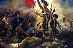
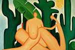

Um dos maiores sites
de arte da internet.
Pinturas
|  A Liberdade guiando o povo, |
O Sonho, |
 Antropofagia, |
Juramento dos horacios, |
Mona Lisa, |
Noite estrelada, |
O Beijo, |
Dora Maar com gato, |
Lembranças de Recife , |
Mulher com Sombrinha, |
O grito, |
Retrato do Dr. Gachet, |